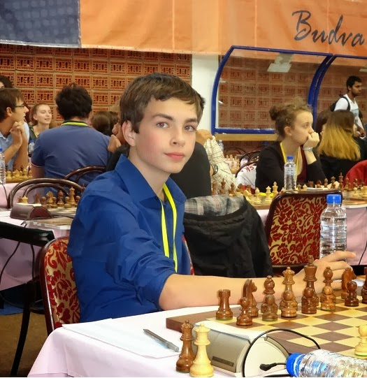
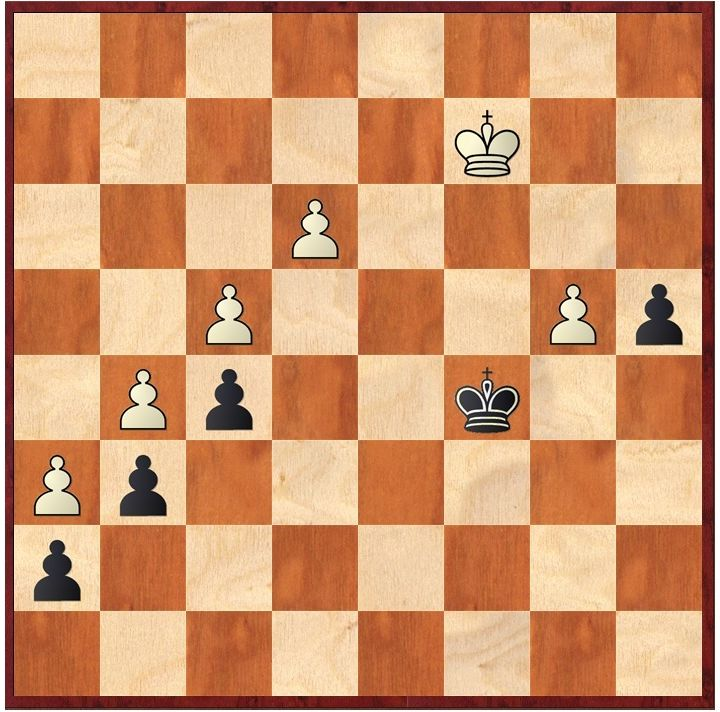
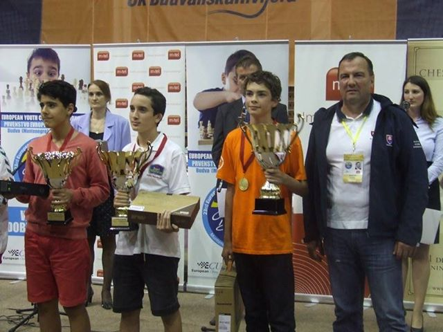
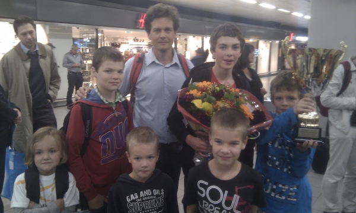

European Chess Champion 2013!!From 28 September till 10 October 2013 I played the European Youth Chess Championship in Montenegro. Montenegro is small country in south-eastern Europe with about 600,000 inhabitants. It was formal Yugoslavia but it became independent on 3 june 2006. The tournament was held in Budva, a very old village (3500 years old). Budva is It is by the Adriatic coast where we could swim. The only problem was that although the weather was above 20 degrees there was a lot of rain, still it was a lot better than in the Netherlands where it is a lot colder. The day before we left I slept at my grandparents who brought me and my brother Lucas to the airport because the airplane left early in the morning. First we flew to Belgrade were had to wait for 3 hours because there were no direct flies to Podgorica. Then when we finally came in Podgorica where we found out that my brother had lost his baggage because the airport in Belgrade had forgotten to put it in the airplane to Podgorica. Now my brother had to do 5 days without new clothes, but he didn't mind at all. From Podgarica we had a bustrip to Budva which took 2 hours. I thought the trip was pretty dangerous because the busdriver drove very fast along deep ravines. However it was still nice to see Montenegro and we finally arived in Budva. There we ate something and played some games, then everybody went to bed quickly because everybody was very tired of the journey.  The city The city I shared my room with Nicky Maatman, Dutch Champion under 20. Merijn van Delft was our coach. We had a very strict schedule. In the morning we had breakfast at nine. At 10 we started to prepare for the games. Merijn van Delft coached me, Nick, my brother Lucas, and Robby. After lunch we had some free time and then the games started.  The next day the first round started. In the first round I didn't know the opening very well but my opponent quickly made a mistake and I could win the game. In the second round I had a lot more trouble winning because I didn't play accurately and the game got into an equal endgame. My opponent had time trouble but still it was not so difficult to hold a draw for him. After playing for 5 hours my opponent was very tired of defending so I decided to finally go for it.  My game in second round after which my opponent finally made a mistake by taking on b4 with his king. Now I played e4 fxe4 f5 a3 f6! and the pawn promotes with check! He should have played Kb6 after which he could still hold a draw. On the rest day we played soccer against Austria but I am not that good at soccer so we lost. Then we went for a swim in the sea but it was cold and when I got out of the sea I got the chillings for one hour. In the evening played a game called Weerwolven but nobody took it seriously and everything ended up in a mess but it still was great fun. After 4 rounds I had 4 out of 4. The next 4 rounds I had 2.5 point. In the last game I had to win to have a chance to become European Champion. Here is the last game of me. After this game it was still very exciting because if black won on board two or three I would be shared first. Luckily in both games white won and I was European Champion! Me and the other price winners That evening I was very happy and we played a lot of blitz games. I didn't go to sleep that evening, because we already left the hotel at 3 o'clock in the night. In the journey back everybody was really tired but everything went well and at eleven in the morning we were back at Schiphol were my family was waiting for me. Coming home I expected that the Dutch Chess Federation would be happy with my achievements and would ask me to represent the Netherlands for the coming World Championship. Nothing could be further from the truth. The Dutch Chess Federation asked me to go, but was not willing to cover the cost. Instead they want to spend their budget to send girls who have never played one serious game in their life to a European Championship, and they consider this evenly important as sending top 10 players to this tournament. Simultaneously girls who do like chess (and belong to the European top) are not invited to go to the European Chess Championship (see Blog Maaike Keetman), simply because they choose to play chess with boys to improve their play. Because of the cost, and because I don't want to be associated with a Chess Federation whose decisions are incomprehensible (I can only see that these decisions do not promote chess at all), I decided not to participate in the World Chess Championship.  Me and my family after I came back at Schiphol airport. |